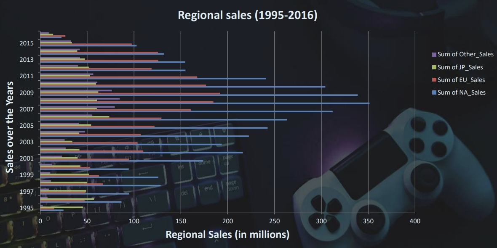

Video Games Popularity
“GameCo” is a hypothetical company, created as part of the project involving the Data Analytics course program from CareerFoundry. I was hired as a data analyst to perform a descriptive analysis of a video game data set to foster a better understanding of how GameCo’s new games might fare in the market.
CONTEXT AND OBJECTIVE:
GameCo’s executive board were assuming that sales for the various geographical regions have stayed the same over time. My job was to accept or reject that hypothesis, and in either case, to share meaningful insights towards maximizing the return of investment and configuring the marketing budget and strategy overall.
DESCRIPTIVE ANALYSIS:
Step 1:
My approach took the path of checking how the sales were looking across all the regions. This immediately rejected the initial hypothesis and I moved to exploring other variables
Step 2:
My second step was to explore the regional sales, compared to global sales. The picture behind showed that Japan and North America region rivalled each other from 1983 to 1995, after which they separate and North America held the top spot until 2008, whereas Japan remained experiencing relatively low revenue. Since the financial crisis in 2008, North America sales showed consistent downward flow since 2010 onwards, and as seen in the picture below that tendency was expected to continue.
Same chart shows that Europe’s region was steadily and very consistently going up. Expectations were for this trend to continue:

Step 3:
One more thing still intrigued me and seemed very important for the marketing plan and that was the topic for the genres. I combined the game sales with the genres and the sum of each regions’ sales into a stacked bar chart to easily visualize the answer to that question:

This picture gave a clear insight into which genres perform best in which regions. I safely concluded that:
- North America was dominating across all game genres except for “role-playing”. There we could see Japan rival North America.
- Europe was consistent across all genres.
- North America’s customer base enjoyed primarily action, shooter, and sport games.
- Japan’s region enjoyed role-playing, strategy, and puzzle games.
KEY TAKEAWAYS:
CONCLUSION:
After disproving the initial hypothesis, I found myself in deep analysis trying to understand how different game sales perform in different market regions. This project was not so hard on me, since it was straightforward, interesting, and fun. Due to my methodical approach, I didn’t find myself in difficult situations but rather went through the investigation with ease.